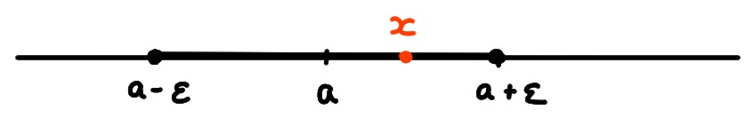

Souvent, une difficulté de l'analyse est d'estimer si un réel est petit ou
grand, indépendamment de son signe. Pour cela, on introduit la notion de
valeur absolue.
La valeur absolue de \(x\in \mathbb{R}\) est définie par
\[
|x|:=
\begin{cases}
x&\text{ si }x\gt 0\,,\\
0&\text{ si }x=0\,,\\
-x&\text{ si }x\lt 0\,.
\end{cases}
\]
Puisque \(-3\) est négatif, on a \(|-3|=-(-3)=+3\).
Si on divise un réel non-nul \(x\) par sa valeur absolue, on obtient son signe:
\[ \frac{x}{|x|}=
\begin{cases}
+1&\text{ si }x>0\,,\\
-1&\text{ si }x<0\,.
\end{cases}
\]
(On n'associe pas de signe au nombre zéro.)
Les propriétés suivantes suivent de la définition:
\(|-x|=|x|\geqslant 0\)
\(|x|=0\) si et seulement si \(x=0\)
\(-|x|\leqslant x\leqslant |x|\)
Si \(a\geqslant 0\), alors \(|x|\leqslant a\) si et seulement si
\(-a\leqslant x\leqslant +a\).
\(|x\cdot y|= |x|\cdot |y|\)
Si \(y\neq 0\), \(|\frac{x}{y}|=\frac{|x|}{|y|}\).
(Inégalité triangulaire)
Pour tous \(x,y\in \mathbb{R}\),
\[|x+y|\leqslant |x|+|y|\,.\]
Si \(x+y\geqslant 0\), alors
\[
|x+y|=x+y\leqslant |x|+|y|\,.
\]
Si \(x+y< 0\), alors
\[
|x+y|=-(x+y)=(-x)+(-y)\leqslant |x|+|y|\,.
\]
Remarquons qu'on peut utiliser la valeur absolue pour caractériser
le nombre nul de plusieurs manières:
\[
x=0\Longleftrightarrow |x|=0 \Longleftrightarrow |x|\leqslant \varepsilon\quad \forall \varepsilon\gt 0\,.
\]
Distance
On mesure la proximité de deux nombres \(x,y,\in \mathbb{R}\) en
calculant leur distance, définie par
\[ \mathrm{dist}(x,y):= |x-y|\,.
\]
(Propriétés de la distance)
\(d(x,y)\geqslant 0\) pour tous \(x,y\in \mathbb{R}\). De plus, \(d(x,y)=0\) si et
seulement si \(x=y\).
\(d(x,y)=d(y,x)\) pour tous \(x,y\in \mathbb{R}\)
Pour tous \(x,y,z\in \mathbb{R}\),
\[
\mathrm{dist}(x,y)\leqslant \mathrm{dist}(x,z)+\mathrm{dist}(z,y)\,.
\]
Les deux premières affirmations suivent directement des propriétés
de la valeur absolue. Pour la troisième,
\[\begin{aligned}
\mathrm{dist}(x,y)=|x-y|&=|(x-z)+(z-y)|\\
&\leqslant |x-z|+|z-y|\\
&=\mathrm{dist}(x,z)+\mathrm{dist}(z,y)\,.
\end{aligned}\]
Dans l'inégalité, on a utilisé l'inégalité triangulaire.
On utilisera souvent les équivalences suivantes:
\[\begin{aligned}
\mathrm{dist}(x,a)\leqslant \varepsilon
\quad
&\Longleftrightarrow
\quad
|x-a|\leqslant \varepsilon
\quad\\
&\Longleftrightarrow
\quad
a-\varepsilon\leqslant x\leqslant
a+\varepsilon\\
\quad
&\Longleftrightarrow
\quad
x\in [a-\varepsilon,a+\varepsilon]
\end{aligned}\]

Soit \(a\gt 0\).
[ ] Si \(x\leqslant a\), alors \(|x|\leqslant a\).
[ ] Si \(x\gt a\), alors \(|x|\gt a\).
[ ] Si \(|x|\leqslant a\), alors soit \(x=a\), soit \(-a\lt x\lt a\).
Soit \(\mathrm{dist}(\cdot,\cdot)\) la distance sur \(\mathbb{R}\).
Vrai ou faux?
[ ] Si \(\mathrm{dist}(x,y)\gt 0\), alors \(x\neq y\).
[ ] Si \(x\lt y\), alors \(\mathrm{dist}(x,y)\lt 0\).
[ ] Si \(x\lt z\lt y\), alors \(\mathrm{dist}(x,z)\lt \mathrm{dist}(z,y)\).
[ ] Si \(y=x/2\), alors \(\mathrm{dist}(x,y)=\frac{x}{2}\).
[ ] Si \(\mathrm{dist}(x,y)=\alpha\) et \(\mathrm{dist}(y,z)=\beta\), alors
\(\mathrm{dist}(x,z)=\alpha+\beta\).
[ ] Si \(x\lt z\lt y\), alors \(\mathrm{dist}(x,y)^2\leqslant \mathrm{dist}(x,z)^2+\mathrm{dist}(z,y)^2\).
[ ] Si \(\mathrm{dist}(x,y)\leqslant \varepsilon\) pour tout \(\varepsilon\gt 0\), alors
\(x=y\).